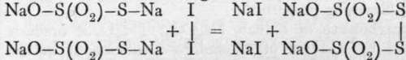

Hydrosulphites
Description
This section is from the book "Modern Chemistry", by William Ramsay. Also available from Amazon: Modern Chemistry: Theoretical and Modern Chemistry (Volume 2).
Hydrosulphites
Hydrosulphurous acid, H2S2O4, sometimes called " hyposulphurous acid," is produced as zinc salt by the action of metallic zinc on sulphurous acid. The liquid turns brown, and possesses great reducing power. The sodium salt, which is better known, is produced by digesting zinc turnings with a concentrated solution of hydrogen sodium sulphite: Zn + 4HNaSO3.Aq = Na2Zn(SO3)2 + Na2S2O4.Aq + 2H2O ; the sodium zinc sulphite crystallises out on addition of alcohol, leaving the hydrosulphite in solution. On cooling the solution, slender crystals of the hydrosulphite separate. This salt can also be prepared by the action of sulphur dioxide on sodium hydride, thus : 2NaH + 2SO2 = Na2S2O4 + H2. Its solution absorbs free oxygen so rapidly that it turns warm ; it is used as a reducing agent in indigo-dyeing; indigo-blue is converted by the hydrogen of water (of which the oxygen enters into combination with the hydrosulphite, converting it into sulphite) into a colourless substance, termed indigo-white ; this body being soluble, penetrates the fibre of fabrics dipped into the solution, and on exposure to air, indigo-blue, with its usual colour, is deposited as an insoluble precipitate in the cloth. By help of sodium hydrosulphite, too, a ferrous salt may be deprived of ferric so completely that it gives a nearly white precipitate with alkalies; the usual colour of the impure ferrous hydroxide is a dirty green.
Thionates*-Manganese dithionate is produced by passing a current of sulphur dioxide through freshly prepared manganese dioxide suspended in water, made by boiling potassium permanganate with alcohol. The equation MnO2.nH2O + 2SO2.Aq = MnS2O6.Aq represents the change. On addition of barium hydroxide to the manganese salt, manganous hydroxide is thrown down, and barium dithionate is left in solution. From it, the acid may be prepared by the addition of the requisite amount of sulphuric acid; and the other salts, by addition of the appropriate sulphate. The acid, concentrated by evaporation at a low temperature, is a sour, syrupy liquid ; when heated, it decomposes into sulphur dioxide and sulphuric acid.
Trithionic acid, H2S3O6, is also known; it is a still more unstable liquid.
Tetrathionate of sodium, as already remarked, is produced by addition of a solution of iodine to a thiosulphate; it is precipitated on addition of alcohol. The acid forms a colourless solution, with strong acid taste. The method of its formation gives a clue to its constitution :

Pentathionic acid, H2S5O6, is produced by passing a current of hydrogen sulphide through a dilute solution of sulphurous acid, along with tri- and tetrathionic acids : 5H2S + 5SO2.Aq. = H2S5Oe.Aq + 4H2O + 5S is the equation usually given. Excess of hydrogen sulphide, passed for a long time, results in the reaction 2H2S -f SO0.Aq = 2H2O.Aq+3S. The tri-, tetra-, and pentathionates, when heated, yield a sulphate, sulphur dioxide, and free sulphur.
Continue to:
- prev: Iodometry
- Table of Contents
- next: Highly Oxidised Acids